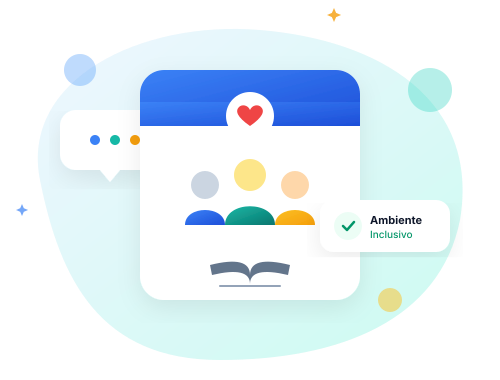
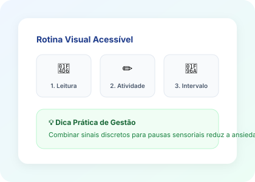

Acolher
Acolher
Autismo (TEA)
Compreenda o espectro com clareza, desmistifique estigmas e conheça as diferentes formas de comunicação e sensorialidade.
Conhecer o Espectro →Conheça o autismo, explore práticas inclusivas para professores e encontre a rede de apoio. Informação e parceria para aproximar escola, famílias e comunidade.

Comece pela compreensão do autismo, leve as orientações para a sala de aula e fortaleça a parceria com a rede de apoio:
Compreenda o espectro com clareza, desmistifique estigmas e conheça as diferentes formas de comunicação e sensorialidade.
Conhecer o Espectro →Estratégias pedagógicas práticas, planejamento de ambiente sensorial, previsibilidade e orientações para situações reais.
Guia do Professor →Fortaleça o diálogo entre escola, família e profissionais e conheça os serviços de cuidado e proteção de direitos.
Ver Rede de Apoio →O Transtorno do Espectro Autista (TEA) é uma condição do neurodesenvolvimento com manifestações únicas em cada indivíduo.
Formas diversas de expressar e compreender informações verbais, visuais e não verbais.
Estímulos como sons altos, luz intensa ou aglomerações podem ser processados com alta intensidade.
Antecipar mudanças na rotina escolar pode ajudar na preparação para as atividades.
O espectro é plural. O que auxilia um estudante pode precisar de ajustes para outro.
O educador não precisa ter todas as respostas. Observar com empatia, escutar e adaptar são atitudes fundamentais.

Dúvidas sobre como agir no dia a dia? Conheça abordagens baseadas em respeito e acolhimento:
Permita pausas em locais mais calmos, incentive o uso de abafadores de ruído e ofereça um momento de autorregulação.
Antecipe transições sempre que possível, com avisos visuais e tempo de preparação adequado às necessidades do estudante.
Faça convites gentis sem pressionar. Proponha atividades estruturadas ou em pequenos grupos com temas de interesse mútuo.
Combine sinais discretos com o estudante (um cartão colorido, um bilhete ou gesto combinado) para avisar quando precisar de apoio.
Se houver perigo imediato, acione um serviço de emergência e um adulto de confiança. Os canais de orientação e apoio emocional não substituem o atendimento de urgência.
A inclusão se fortalece quando escola, família e serviços trabalham juntos. Conheça sua rede de confiança e os canais de cuidado e proteção disponíveis:
O portal Acolher é uma iniciativa comunitária de caráter estritamente educativo e informativo. Não realizamos atendimento individual direto, triagem clínica ou intervenção psicológica. Caso você, um estudante ou familiar esteja precisando de acolhimento imediato, orientação técnica ou proteção, utilize diretamente os serviços públicos e organizações de apoio abaixo:
Apoio emocional gratuito e confidencial oferecido por voluntários. O telefone funciona 24 horas; o chat segue os horários informados no site oficial. Não é consulta psicológica.
Canal oficial do Ministério dos Direitos Humanos e da Cidadania para orientações e denúncias de violações de direitos de crianças, adolescentes e pessoas autistas.
Procure sua UBS para orientação sobre o cuidado disponível no território. Os CAPS recebem procura direta para o primeiro acolhimento. Consultas e acompanhamento seguem a avaliação e a organização local. Para localizar um serviço, consulte a UBS ou a Secretaria Municipal de Saúde.
Orientação gratuita sobre riscos e violência na internet, como cyberbullying, chantagens e exposição de imagens. O serviço pode orientar a busca pela rede de proteção; não substitui psicoterapia ou representação jurídica.
Informações dos serviços consultadas em 19 de outubro de 2026. Confira as condições atuais nos sites oficiais. Ver as fontes sobre a rede de apoio →
Referências para os temas desta página. Os exemplos, cartões e checklists do Acolher são recursos educativos autorais, sem validação como instrumentos psicológicos. Consulta: 19 de outubro de 2026.